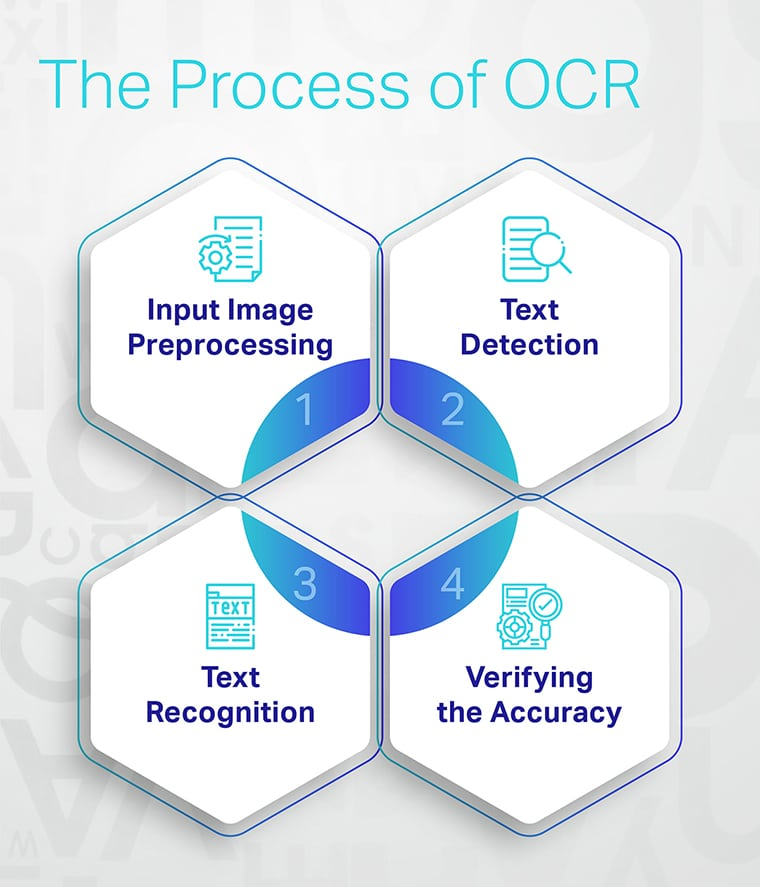

Handwriting Recognition with OCR
What is OCR?
Optical character recognition (OCR) technology that converts printed and physical documents into
machine-readable texts has already spread across many industries.Handwriting recognition technology is an
active area of artificial intelligence research. Its growing popularity drives its development. It has
applications in areas such as enterprise, field services, and healthcare.New advances in machine learning
are constantly improving the accuracy of handwriting recognition.
How does HTR work?

Applications of OCR
- The banking industry is using OCR to archive client-related paperwork to easily create
a client repository.
- For book scanning where turns raw images into digital text format.
- For digitization for various industries to cut down manual workload.
- Education - Handwriting recognition can be used in educational institutions to digitize
handwritten documents such as assignments, notes, and exams. This will help in reducing
the workload of teachers and allow them to focus more on teaching.